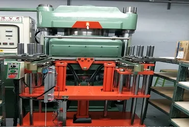
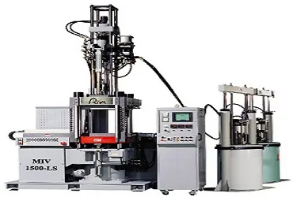
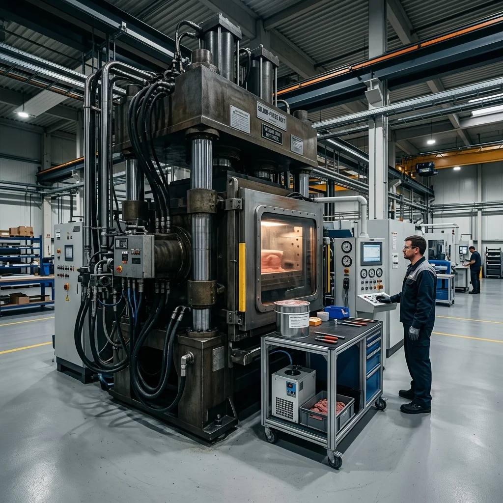
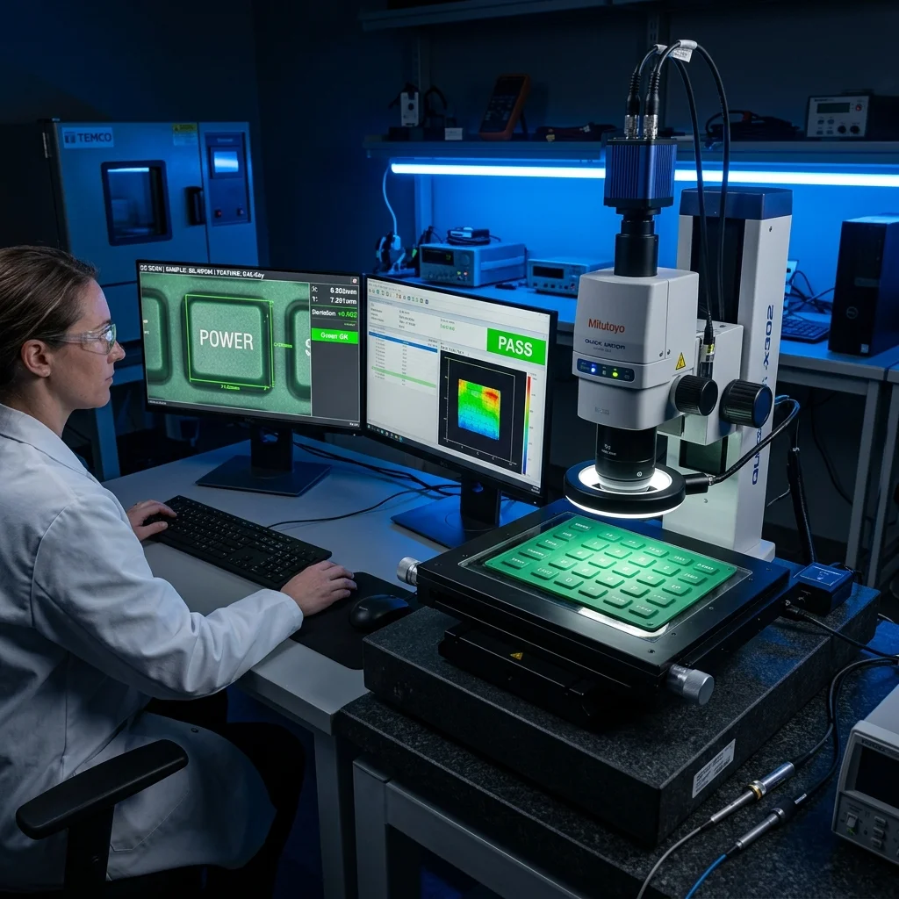

伝統的かつ成熟したシリコン成形技術であり、真空熱圧（圧縮成形）方式を用いて固形シリコン原料を金型内で加熱・硫化成形します。大量生産に適しており、金型費用が比較的安価なため、シリコン製品の量産における第一候補となります。
当社の主な技術は、純シリコン・ゴム製品、シリコンと異材質の結合、プラスチック＋シリコン接合部品、金属＋シリコン接合部品など、多様な製造プロセスに注力しています。新北市新荘区に工場を構え、台北地域および台湾全土のお客様に最も専門的な一括受託製造加工服務を提供しています。

市場の精密なニーズと品質要求に応え、さらなる向上を目指して、鈞翔はLSR液状シリコーンゴム射出成形技術を導入しました。LSR技術は、高精度、高度な自動化、優れた生産効率などの特長を持っています。
この技術はお客様の精密な要求を高度に実現し、医療機器、電子部品、自動車用アクセサリーなど、高精度が要求される製品製造に適しています。
製品構造、公差精度、生産ロット、金型予算に応じて最適な加工工法を推奨し、試作開発および量産コストの最適化を支援します。
| 評価項目 | LSR 液状射出成形 | 固形シリコン真空熱圧（圧縮） | インサート成形（異材質接合） |
|---|---|---|---|
| 主な原料形態 | 2液型液状シリコーン（A/B液混合） | 固形シリコーン混練ゴム（混練・裁断） | 固形または液状シリコーン＋インサート基材 |
| 寸法精度・バリ制御 | 極めて高い（バリなし/極小バリ設計） | 標準（パーティングラインで手動・冷凍脱バリ） | 精密（金型合わせ面によるバリ漏れ防止設計） |
| 成形サイクル | 迅速（高速硬化射出） | 中等（手動材料仕込み＋真空加硫） | 中〜長（基材治具セット＋予熱加硫） |
| 金型費用・開発投資 | 高（精密射出流道金型・真空シール） | 低〜中（金型構造が成熟・試作に有利） | 中〜高（インサート位置決め治具と合わせ面精度） |
| 適した生産ロット | 中〜大規模量産（連続自動生産） | 小ロット試作から大規模量産まで柔軟 | 小ロット機能検証から大規模量産まで |
| 代表的な用途例 | 医療機器、呼吸マスク、精密防水シール、光学部品 | 導電キーパッド、防水パッキン、防振ゴム足、キッチン用品 | シリコン包鉄防振部品、コネクタ樹脂包膠、金属端子一体型 |
2D/3D図面の成形性（DFM）事前評価から金型自社製作、初品T1検査、ISO 9001量産まで、厳格な品質マイルストーンを運用しています。
STEP, IGES, DWG, PDF形式に対応。技術協議・図面評価前に双務秘密保持契約（Mutual NDA）を締結し、お客様の知的財産を保護します。
耐熱・耐油・耐薬品性や使用環境に応じ、Shore A硬度（10°〜80°）および特殊配合（自潤、フッ素シリコン、EPDM/NBR）をご提案します。
パーティングライン（PL）、抜き勾配、排気ベント、肉厚均一性を評価し、気泡・縮み・引裂きなどの潜在的成形リスクを設計段階で解消します。
金型製作を自社直接管理。精密CNCおよび放電加工によりキャビティ公差を厳格制御し、バリ防止合わせ面とシボ/鏡面仕上げを両立します。
初品試作サンプルを成形し、2.5D光学測定機による非接触寸法検査、バリ外観チェック、硬度計測定を実施。FAI検査記録を作成します。
試作サンプルをお客様へ発送し、実機嵌合および機能試験を実施いただきます。必要に応じた金型微調整を迅速に行い最終承認を取得します。
ISO 9001:2015管理体系に基づき、工程巡回検査、オーブン二次加硫脱気、出荷前ロット抜取検査、厳重梱包を経て納期通りに納品します。
複数の先進自動生産設備と精密測定機器を導入し、安定生産と高水準の品質保証を実現しています。
台湾の大手メーカー川連機械の精密制御システムを採用し、自動計量混合と組み合わせて、高品質なシリコンゴム部品向けに効率的で安定した射出成形製造を提供します。

先進的な真空引きシステムを装備し、気泡欠陥を完全に排除。大量生産のシリコンキーパッド、防水シール、Oリング、およびインサート成形（オーバーモールド）製品の生産に適しています。

非接触式の高精度二次元投影測定により、製品の微細な特徴、小さな孔径、および境界公差が厳格に管理され、品質管理の核心的な武器となっています。
各業界の過酷な環境耐候性、機械的応力、および国際安全規格（FDA/LFGB/USP Class VI）に応じた最適な配合と精密金型成形を提供します。
高精度防水気密パッキン、導電性シリコンキーパッド、イヤーピース、筐体用マイクロ衝撃吸収パッド。
呼吸マスク用皮膚接触シリコンクッション、注射器プランジャー自潤ガスケット、流体コネクタ部品。
自潤オイルブリード防水ワイヤーグロメット、耐熱耐候ブーツ、エンジン周辺耐油性Oリング。
空撮カメラジンバル防振ダンパーボール、脚部着地緩衝パッド、屋外IP防塵防水パッキン。
高真空チャンバー用フッ素シリコーン（FVMQ）シールリング、耐プラズマガスケット、ウエハ搬送緩衝パーツ。
真空保温ボトル気密パッキン、食品級ベーキングモールド・ヘラ、乳幼児用シリコンストロー・歯固め。
水冷クイック継手用耐熱Oリング、コールドプレート液密ガスケット、高出力モジュール絶縁緩衝シート。
空圧油圧バルブシール、大型防振マウントゴム足、ポンプダイアフラム、金具焼付一体成形品。
製品の使用環境に応じて、必要な物理特性や認証要件にチェックを入れてください。最も適したシリコンゴム原料をご提案します。
配合されたシリコーンオイルが成形後に表面へゆっくりと析出し、極薄の長効潤滑膜を自動形成。自動車用ワイヤーシール、医療用プランジャーガスケットに最適。
2液型自動混合射出。無毒・無臭、耐老化性および生物適合性に極めて優れています。耐熱、防塵、高透明、医療規格要件において優れたパフォーマンスを発揮します。
フッ素ゴムの耐溶剤・耐油性と、シリコンの広い耐熱範囲を兼ね備えています。自動車エンジン用シール、燃料ホース用保護リング、航空宇宙産業に広く使用されています。
特殊変性シリコン。射出成形時にプラスチック（PC, PBT, PA）や金属表面に直接化学結合するため、プライマーの塗布が不要で、多部品防水パーツに最適です。
主に食品に直接接触するシリコンキーパッド、家庭用シリコン製品、および食器用シールの製造に使用され、米国FDAおよびドイツLFGB規格に準拠しています。
優れた耐薬品性、抗UV性、耐オゾン性を備えています。自動車用ガラスランチャンネル、屋外防水密閉ボックス、および防振・減震ゴム部品に広く使用されています。
優れた耐鉱物油性、耐ガソリン・ディーゼル性、および引張強度を備え、引き裂きや摩耗に強いため、産業機械用Oリング、防塵カバー、オイルバルブに適しています。
調達部門・機構設計エンジニアの皆様から頻繁に寄せられる、金型試作、MOQ、量産、材料認証に関する重要回答をまとめました。
STEP (.step / .stp)、IGES (.iges / .igs)、AutoCAD (.dwg / .dxf)、およびPDFエンジニアリング図面など、標準的な2Dおよび3D CADデータに対応しています。現物サンプルのみの場合でも、リバースエンジニアリング測定と成形性評価が可能です。
はい、対応可能です。開発段階の試作金型製作や小ロット検証から、大量生産まで柔軟に対応します。具体的なMOQは製品寸法、材料仕様、キャビティ数により異なりますので、お気軽にご相談ください。
金型開発とT1試作サイクルは、製品構造の複雑さ、アンダーカット、キャビティ数によって異なります。完全な図面を受領しDFM方案が確定した後、正確なマイルストーン工程表をご提示します。
異材質接合の強度は、インサート材の表面処理、プライマー選定、金型予熱温度管理、および高精度なバリ防止パーティングライン設計によって確保されます。30年の金型実績に基づき、アルミ、SUS、鉄、エンプラ向けに専用治具と成形条件を最適化し、強固な密着を実現します。
はい、可能です。お客様の特許や新製品設計の機密性を最重要視しています。2D/3D図面の受領や技術協議の前に、双務秘密保持契約（Mutual NDA）を締結いたします。
鈞翔実業はISO 9001:2015認証工場です。案件要件に応じ、米国FDA 21 CFR 177.2600食品規格、欧州LFGB、USP Class VI生体適合性、RoHS、REACH等に適合する原料を選定し、分析証明書（COA）や試験報告書をご提出可能です。
2D / 3D CADデータ（.STEP, .STP, .IGS, .DWG, .PDF）に対応。図面確認前に秘密保持契約（NDA）締結可能、知的財産を厳格に保護します。